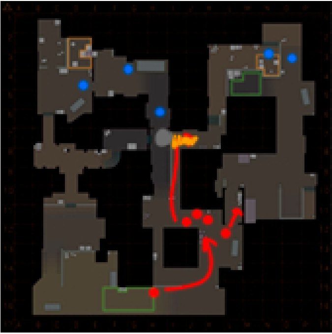
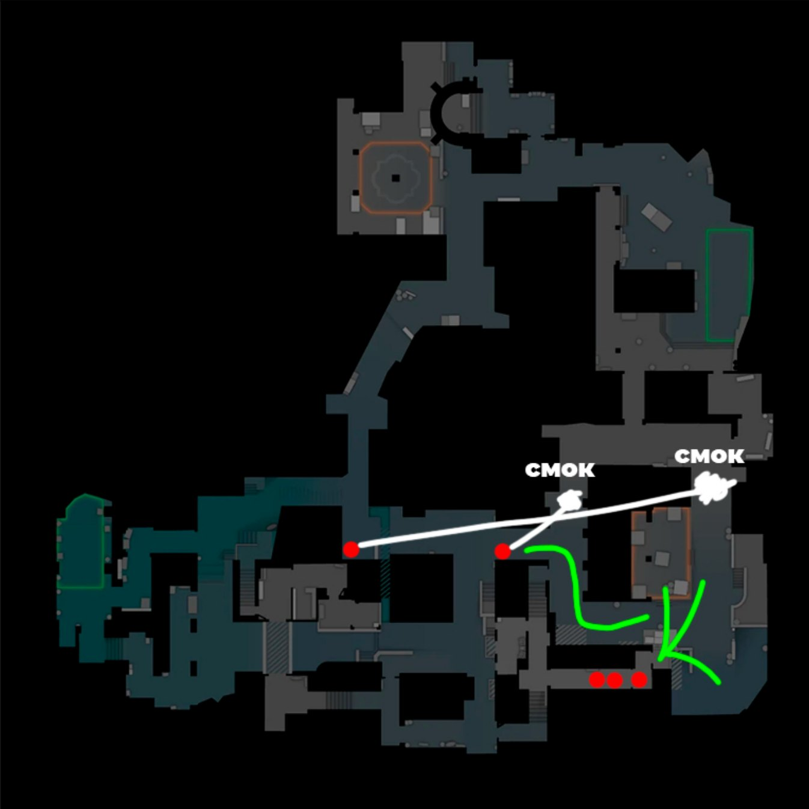
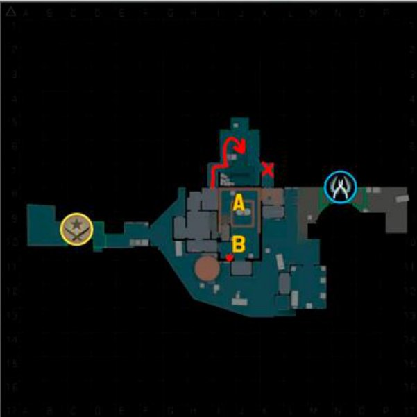
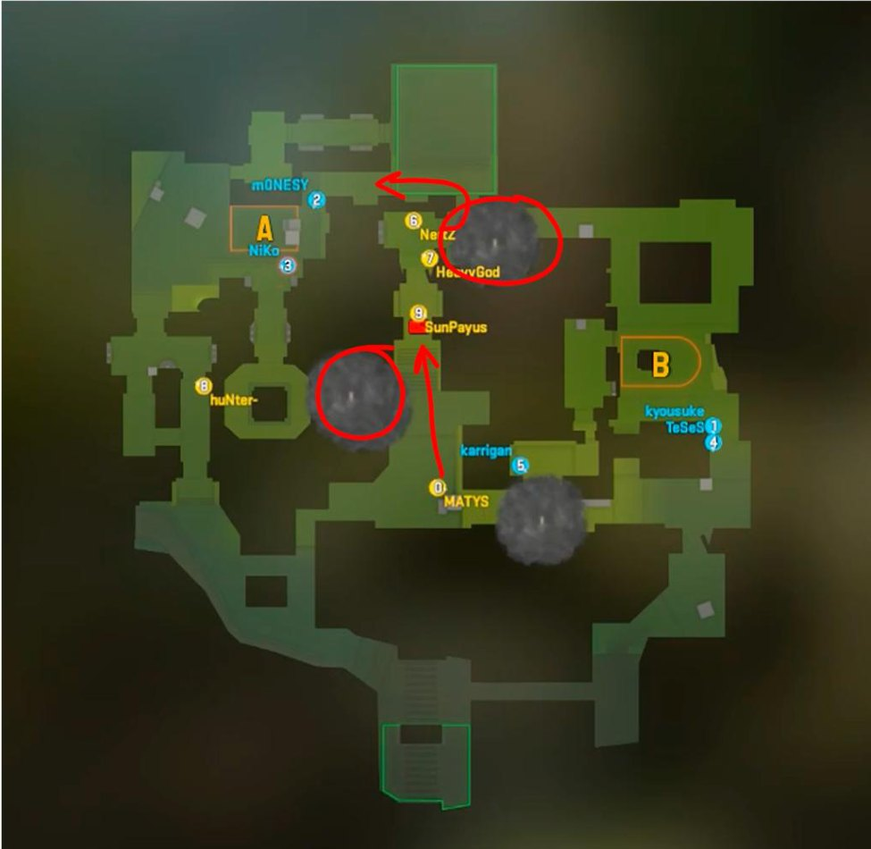
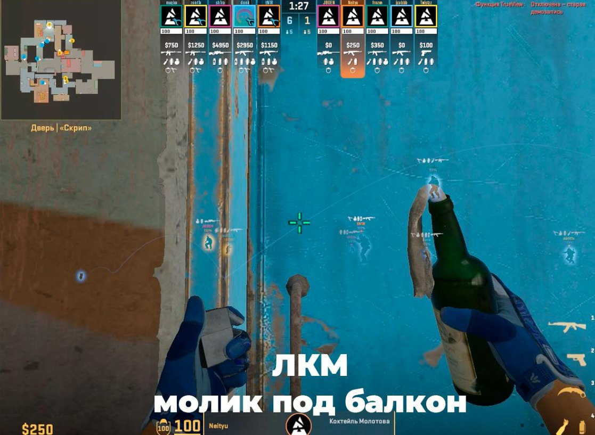
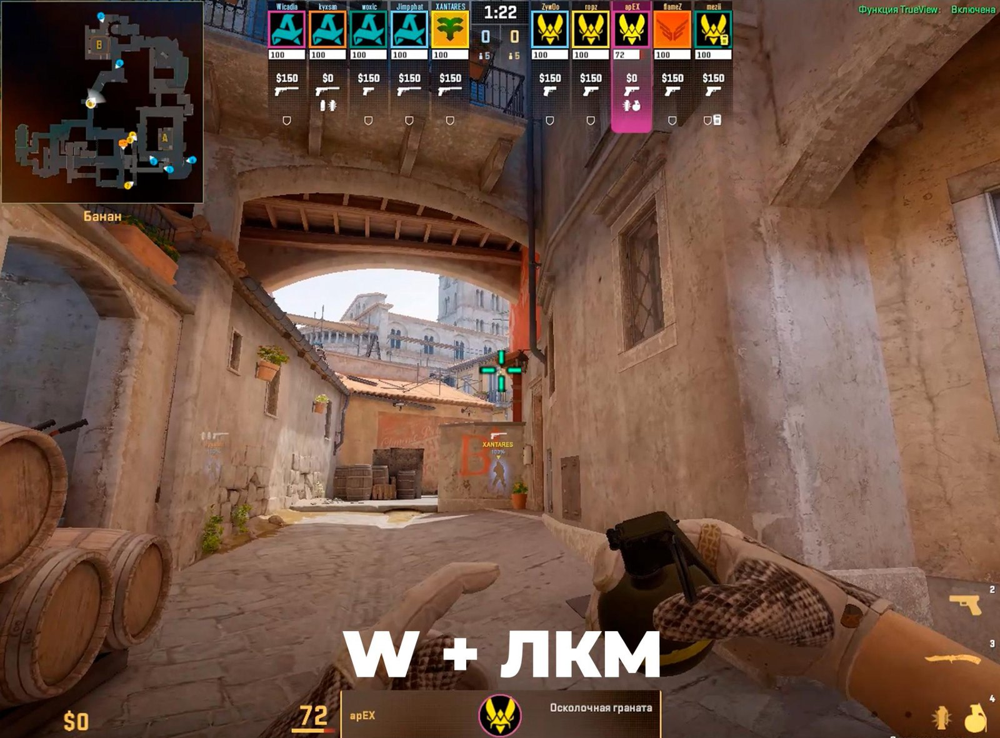

Тактики CS2
36 тактик с раскидами, движением по карте и закупом.
Карты

Dust 2
9 тактик
FUT · Falcons · Team Spirit · Vitality · Без команды

Mirage
7 тактик
FURIA · Falcons · Team Spirit · Vitality

Inferno
4 тактики
MOUZ · Vitality

Nuke
4 тактики
MOUZ · NAVI · Vitality · Без команды

Ancient
5 тактик
Falcons · G2 · NAVI · Без команды

Anubis
4 тактики
Falcons · Team Spirit · Vitality

Cache
3 тактики
FUT · FaZe · Vitality
Недавно добавленные

Cache · Vitality
Фуллбай от Vitality на cache
Сплит Б
СплитПлент B

Cache · FaZe
Фуллбай от Faze Clan на кэше
Сплит А
СплитПлент A

Cache · FUT
Фуллбай от FUT на кэше
Сплит А
СплитПлент A

Inferno · Vitality
Пистолетка от Vitality на инферно
Сплит А + Б
ПистолеткаПлент A
Inferno · Vitality
Пистолетка Inferno (Vitality) Сплит А
апсы + шорт
ПистолеткаПлент AЧерез шорт

Inferno · MOUZ
Быстрый врыв банана от MOUZ на Inferno
ФорсВрыв